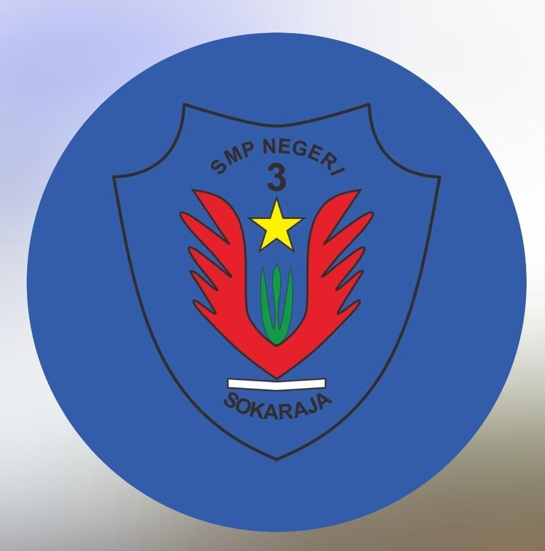

<div id="pv-stage" class="viz-dotted-background">

<div id="pv-app" aria-label="Prototipe pemilihan ketua OSIS SMP Negeri 3 Sokaraja">
<header class="head"><div><div class="brand">Pemilos Spenthree</div><div class="subtitle">SMP Negeri 3 Sokaraja</div></div><span class="badge">DEMO</span></header>
<main>
<section class="page" data-screen="home"><div class="kicker">Pemilihan ketua OSIS</div><h1>Kenali calonnya.<br>Tentukan pilihanmu.</h1><p class="desc">Baca visi dan program setiap calon sebelum memberikan suara.</p><div class="hero"><div class="stamp"><span class="kicker">Satu siswa · Satu suara</span><i data-lucide="vote" aria-hidden="true"></i></div><h2>Pilihanmu untuk<br>OSIS berikutnya.</h2><p>Gunakan hak pilih dengan mandiri dan saling menghargai.</p><button class="primary" id="pv-start">Mulai memilih <i data-lucide="arrow-right" aria-hidden="true"></i></button></div><div class="note"><i data-lucide="info" aria-hidden="true"></i><span>Simulasi pemilihan. Nama calon dan program adalah contoh, bukan daftar kandidat resmi.</span></div><div class="section-title"><h3>Cara memilih</h3><span>3 langkah</span></div><ol class="process"><li><span class="num">01</span><div><h3>Masukkan kode pemilih</h3><p>Gunakan kode yang diberikan panitia.</p></div></li><li><span class="num">02</span><div><h3>Kenali dan pilih kandidat</h3><p>Baca visi-misi, lalu pilih satu calon.</p></div></li><li><span class="num">03</span><div><h3>Konfirmasi suara</h3><p>Periksa kembali sebelum mengirim pilihan.</p></div></li></ol></section>
<section class="page" data-screen="access" hidden><button class="back" data-page="home"><i data-lucide="arrow-left" aria-hidden="true"></i>Kembali</button><div class="kicker">Langkah 01</div><h1>Kode pemilih</h1><p class="desc">Masukkan kode untuk membuka surat suara.</p><label class="field" for="pv-token">Kode akses</label><input id="pv-token" type="text" placeholder="Masukkan kode" autocomplete="off" spellcheck="false"><p class="helper">Untuk mencoba prototipe, gunakan <b>DEMO-2026</b>.</p><button class="quiet" id="pv-fill">Gunakan kode demo <i data-lucide="arrow-up-right" aria-hidden="true"></i></button><p class="error" role="alert" id="pv-access-error" hidden></p><button class="primary" id="pv-login" style="margin-top:15px">Buka surat suara <i data-lucide="arrow-right" aria-hidden="true"></i></button><div class="box"><h3>Belum punya kode?</h3><p>Pada layanan sebenarnya, kode diberikan oleh panitia pemilihan. Jangan membagikan kode kepada siswa lain.</p></div><div class="note"><i data-lucide="shield-check" aria-hidden="true"></i><span>Demo ini tidak memerlukan NIS, kata sandi, atau data pribadi.</span></div></section>
<section class="page" data-screen="ballot" hidden><div class="steps">Akses <span class="on"></span>Pilih <span></span>Konfirmasi</div><h2>Surat suara</h2><p class="desc">Pilih satu calon ketua OSIS. Kamu bisa membaca visi-misi terlebih dahulu.</p><fieldset id="pv-candidates"><legend>Seluruh kandidat berikut adalah contoh.</legend>
<article class="candidate" data-card="1"><label><span class="initials">AP</span><span class="meta"><span class="kicker">Nomor urut 01</span><h3>Aditya Pratama</h3><p>Kelas VIII A · Contoh</p></span><input type="radio" name="pv-choice" value="1" aria-label="Pilih nomor 01, Aditya Pratama"></label><button class="quiet" data-profile="1">Lihat visi & misi <i data-lucide="chevron-right" aria-hidden="true"></i></button></article>
<article class="candidate" data-card="2"><label><span class="initials">NA</span><span class="meta"><span class="kicker">Nomor urut 02</span><h3>Nadia Azzahra</h3><p>Kelas VIII B · Contoh</p></span><input type="radio" name="pv-choice" value="2" aria-label="Pilih nomor 02, Nadia Azzahra"></label><button class="quiet" data-profile="2">Lihat visi & misi <i data-lucide="chevron-right" aria-hidden="true"></i></button></article>
<article class="candidate" data-card="3"><label><span class="initials">RP</span><span class="meta"><span class="kicker">Nomor urut 03</span><h3>Raka Putra</h3><p>Kelas VIII C · Contoh</p></span><input type="radio" name="pv-choice" value="3" aria-label="Pilih nomor 03, Raka Putra"></label><button class="quiet" data-profile="3">Lihat visi & misi <i data-lucide="chevron-right" aria-hidden="true"></i></button></article>
</fieldset><p class="selection" id="pv-selection" aria-live="polite">Belum ada kandidat yang dipilih.</p><button class="primary" id="pv-next" disabled>Lanjutkan <i data-lucide="arrow-right" aria-hidden="true"></i></button></section>
<section class="page" data-screen="profile" hidden><button class="back" data-page="ballot"><i data-lucide="arrow-left" aria-hidden="true"></i>Semua kandidat</button><div class="kicker">Profil kandidat · Contoh</div><div class="profile-top"><div class="initials" id="pv-profile-initials"></div><div><div class="kicker" id="pv-profile-number"></div><h2 id="pv-profile-name"></h2><div class="subtitle" id="pv-profile-class"></div></div></div><div class="box"><h3>Visi</h3><p id="pv-vision"></p></div><h3>Misi & program</h3><ol class="programs" id="pv-programs"></ol><button class="primary" id="pv-select-profile" style="margin-top:22px">Pilih kandidat ini</button><p class="helper" style="text-align:center">Pilihan masih bisa diubah sebelum dikonfirmasi.</p></section>
<section class="page" data-screen="confirm" hidden><button class="back" data-page="ballot"><i data-lucide="arrow-left" aria-hidden="true"></i>Ubah pilihan</button><div class="steps">Akses <span class="on"></span>Pilih <span class="on"></span>Konfirmasi</div><h2>Periksa pilihanmu</h2><p class="desc">Kamu akan memberikan suara kepada:</p><div class="box"><div class="profile-top" style="margin:0"><div class="initials" id="pv-confirm-initials"></div><div><div class="kicker" id="pv-confirm-number"></div><h3 id="pv-confirm-name" style="font-size:19px;margin:5px 0"></h3><div class="subtitle">Calon ketua OSIS · Contoh</div></div></div></div><div class="note"><i data-lucide="lock-keyhole" aria-hidden="true"></i><span>Setelah dikirim, pilihan dikunci pada sesi demo ini. Pastikan kandidat sudah sesuai.</span></div><label class="checklabel"><input type="checkbox" id="pv-agree"><span>Saya sudah memeriksa dan yakin dengan pilihan saya.</span></label><div class="stack"><button class="primary" id="pv-vote" disabled><i data-lucide="vote" aria-hidden="true"></i>Kirim suara</button><button class="secondary" data-page="ballot">Kembali memilih</button></div><p class="helper" style="text-align:center">Simulasi. Tidak masuk ke perhitungan suara sekolah.</p></section>
<section class="page" data-screen="success" hidden><div class="success-icon"><i data-lucide="check" aria-hidden="true"></i></div><div class="kicker">Pemilihan selesai</div><h1>Terima kasih<br>sudah memilih.</h1><p class="desc">Suara simulasi berhasil dicatat. Kamu sudah menyelesaikan alur pemilihan.</p><div class="receipt"><div class="kicker">Bukti partisipasi · Demo</div><strong>PM-2026-DEMO</strong><div class="status"><i data-lucide="circle-check" aria-hidden="true"></i>Sudah menggunakan hak pilih</div><p>Bukti partisipasi tidak menampilkan kandidat pilihanmu.</p></div><div class="note"><i data-lucide="clock-3" aria-hidden="true"></i><span>Pada pemilihan sebenarnya, hasil diumumkan panitia setelah pemungutan suara selesai.</span></div><button class="primary" data-page="home" style="margin-top:25px">Kembali ke beranda</button></section>
<section class="page" data-screen="guide" hidden><div class="kicker">Informasi pemilihan</div><h1>Panduan pemilih</h1><p class="desc">Kenali calon, pilih secara mandiri, dan hormati pilihan teman.</p><details open><summary>Bagaimana cara memberikan suara?</summary><p>Masukkan kode, baca profil kandidat, pilih satu calon, lalu periksa dan konfirmasi pilihan.</p></details><details><summary>Apakah pilihan bisa diubah?</summary><p>Bisa, selama belum menekan Kirim suara. Setelah suara dikirim, sesi demo dikunci.</p></details><details><summary>Apakah ini pemilihan sungguhan?</summary><p>Belum. Ini prototipe untuk presentasi. Semua nama, kelas, program, dan kode merupakan contoh. Tidak ada suara yang dikirim ke sekolah.</p></details><details><summary>Bagaimana jika kode tidak bisa digunakan?</summary><p>Gunakan DEMO-2026 untuk mencoba. Dalam pelaksanaan sebenarnya, hubungi panitia jika kode bermasalah.</p></details><div class="box"><h3>Jadwal & kandidat resmi</h3><p>Ditentukan oleh panitia sekolah. Informasi tersebut dapat dimasukkan setelah disepakati.</p></div></section>
</main><nav aria-label="Menu pemilihan"><button data-page="home" aria-current="page"><i data-lucide="house" aria-hidden="true"></i>Beranda</button><button id="pv-nav-vote"><i data-lucide="vote" aria-hidden="true"></i>Surat suara</button><button data-page="guide"><i data-lucide="book-open" aria-hidden="true"></i>Panduan</button></nav><div class="demo-footer"><span>Prototipe · Kandidat & data contoh</span><button id="pv-reset">Ulangi demo</button></div>
</div></div>
